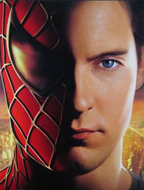
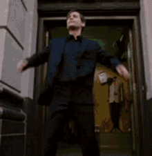

Spiderman (Tobey Maguire).
 Spiderman |
|---|
 Spiderman (Tobey Maguire) |
 Spiderman (Andrew Garfield) |
 Spiderman (Tom Holland) |
 Spiderman (Miles Morales) |
Spider-Man (El Hombre araña en Hispanoamérica) es una película estadounidense de 2002 dirigida por Sam Raimi, escrita por David Koepp, e inspirada en el personaje homónimo creado por Stan Lee y Steve Ditko en 1962. Fue la cuarta de la serie de películas de los superhéroes de Marvel que iniciaría la película Blade en el año 1998 , siguiendole la película X-Men en el año 2000 y continuando con Blade II en el año 2002, estrenandose unos meses antes que Spider-Man. Tuvo una gran acogida de público, sobre todo debido a la gran cantidad de seguidores del personaje de cómic y a los excelentes efectos especiales que John Dysktra (ASC-Sony Pictures Imageworks Inc.) creó para la película logrando ser nominada al Premio Óscar en la categoría de "Mejores efectos visuales". Además, James Acheson creó unos vestuarios muy adecuados para los personajes. Actualmente se encuentra como parte de la cultura popular, y su frase más famosa "Un gran poder conlleva a una gran responsabilidad " ha sido citada a largo de la historia del cine y de la televisión. Tras el éxito de esta película, se estrenó en junio de 2004 su secuela, Spider-Man 2, y tres años después, Spider-Man 3.
Argumento (Pelicula 1)
Peter Parker es un adolescente huérfano brillante científicamente, pero inepto socialmente. Vive con sus tíos, Benjamin "Ben" Parker y May Parker, en el vecindario de Forest Hills, en el distrito neoyorquino de Queens. Está enamorado de su vecina, Mary Jane Watson aunque es demasiado tímido para acercársele, y es el mejor amigo de Harry Osborn, quien lo defiende siempre de las burlas de sus compañeros de la escuela. El padre de Harry, Norman Osborn, es el dueño de Oscorp, una empresa que fabrica armas (aerodeslizadores, trajes de vuelo) para el ejército. Un día la clase de Peter hace una excursión a un laboratorio de genética donde Peter es mordido por una "súper-araña". Al regresar a casa, Peter se desmaya en lo que la mordedura provoca en él un cambio que le otorga poderes sobrehumanos arácnidos: fuerza proporcional a la de una araña, capacidad de adherirse a las paredes, capacidad para segregar y lanzar redes similares a las telarañas por las manos y un «sentido arácnido» que le advierte de los peligros que le pueden acechar. Mientras, Oscorp ha inventado los "potenciadores de desarrollo humano", sueros súper-soldado, con los que Norman trata de cerrar un trato con el General Slocum. Es el nuevo comandante en jefe del ejército quien presiona a Norman de probar pronto el suero, que solamente había sido probado en ratas de laboratorio, amenazando con cerrar todo vínculo comercial con Oscorp. Lo que sumado al hecho de que los principales accionistas y la junta directiva de la compañía le han dado la espalda a Osborn obligándole a renunciar a su puesto como Presidente de la compañía, hace que Norman desesperado por cerrar el trato pruebe el invento consigo mismo. Se vuelve más rápido, fuerte y resistente, pero también queda demente y bipolar y asesina a su ayudante, Mendel Stromm, quien se oponía a hacer pruebas en seres humanos. También roba un traje de vuelo y un aerodeslizador, despertando luego casi amnésico en su despacho. A la mañana siguiente, Peter despierta y ve que su miopía ha desaparecido y que se ha vuelto más fuerte y musculoso. En el instituto, Peter salva a Mary Jane de resbalar con su almuerzo y accidentalmente lanza una bandeja de almuerzo al bully, Eugene "Flash" Thompson, descubriendo así que puede lanzar telarañas y trata de huir de la cafetería, sin embargo Flash lo descubre y trata de golpearlo por la espalda, pero gracias a sus nuevos reflejos logra ganarle en una pelea dejando sorprendidos a sus compañeros, pero sobre todo a Mary Jane y a Harry. Tras huir de la escuela, Peter descubre que es mucho más rápido y fuerte, puede trepar por las paredes y que posee una mayor capacidad para sentir el peligro. Más tarde Peter regresa a casa y viendo que Flash invitaba a salir a Mary Jane en su auto nuevo, planea usar sus recién descubiertas habilidades para comprarse un bólido y así impresionarla. Días después, Peter dice a sus tíos que va a la biblioteca y el tío Ben se ofrece a llevarlo en su coche. El tío Ben le dice a Peter que "un gran poder conlleva una gran responsabilidad", pero Peter groseramente no hace caso de los consejos de su tío y se apunta a un torneo de lucha con el objetivo de conseguir 3000 dólares. Peter lucha bajo el alias de "la Araña Humana" pero el anunciante cambia su nombre al de "el Hombre Araña" (Spider-Man) para pelear con un luchador conocido como "Bonesaw" McGraw. A pesar de las burlas del público y estar enjaulado peleando contra su contrincante, Peter logra vencerlo gracias a sus súperpoderes, pero el encargado del torneo solo le entrega 100 dólares, en lugar de la cantidad prometida del anuncio, según el encargado porque el anuncio del periódico decía 3000 dólares por tres minutos en el ring y Peter venció al luchador en dos. En ese momento, un ladrón armado entra al lugar y le roba al encargado todo su dinero. Peter, quien sigue enfadado con el encargado por no haberle dado sus 3000 dólares, deja escapar al ladrón. Peter sale de allí y mientras camina por las calles ve a mucha gente y policías y paramédicos en un lugar y Peter investiga qué sucede y ve que el que está herido es su tío, el cual lamentablemente muere en sus brazos, y Peter, cegado de la ira se va del lugar furioso y se pone su traje para ir a buscar al asesino. Peter acorrala al supuesto asesino de nombre Dennis Carradine, y descubre que es el mismo atracador al que dejó escapar y este está dispuesto a matar a Peter, pero este le quita la pistola y le tuerce la mano y por el dolor y producto de la impresión cae por la ventana y muere, y Peter escapa antes de la llegada de la policía. Más tarde, Slocum planea contratar a Quest Aerospace, empresa competidora de Oscorp. Norman, usando el exoesqueleto y el aerodeslizador da muerte a Slocum y a su competencia en el mercado de armamento. Después de graduarse, Peter decide usar sus poderes para luchar contra el crimen y se convierte en el superhéroe Spider-Man. El editor del periódico "Daily Bugle", J. Jonah Jameson, pide una foto del héroe para el encabezado de su periódico, deseando mostrarlo como un criminal. Peter se saca fotos a sí mismo con el traje en varias de sus acciones y se las entrega a Jameson, consiguiendo trabajo como fotógrafo independiente, a su vez Peter se entera que Mary Jane no se dedica a la actuación, como ella quería, además de también salir con Harry. Mientras, los dueños del consejo de Oscorp planean vender la empresa a Quest. Norman, equipado con el traje de vuelo y el aerodeslizador, ataca la Feria de la Unidad Mundial y los asesina. Durante el festival, Peter además de tomar las fotos para el periódico se convierte luego en Spider-Man para detener al malvado villano, quien después de asesinar a los directivos de Oscorp y dejar el balcón semidestruido con el peligro de que Mary Jane cayera, Harry trata de salvarla pero cae noqueado por una roca, y Spider-Man, tras una difícil pelea con el Duende Verde, rompe los cables del planeador y salva a Mary Jane quien está curiosa de la identidad de su salvador. Jameson le da al nuevo supervillano, el nombre de el Duende Verde además de hacer ver a Spider-Man como su cómplice. El Duende Verde secuestra e invita a Spider-Man a unirse a él, pero este se niega. Días después, Mary Jane sale de una audición, y se encuentra con Peter, tras lo cual tienen una pequeña conversación. Comienza a llover y Mary Jane se va y Peter la ve alejándose, hasta que unos tipos la siguen, al parecer con el fin de violarla. Peter la sigue y la salva. Luego, Mary Jane quiere darle las gracias, le baja la máscara y besa a su salvador. El Día de Acción de Gracias, el Duende Verde incendia un edificio y Spider-Man llega para detenerlo pero el villano lanza cuchillas hacia él dejándolo herido en un brazo. Mientras la tía May, Mary Jane y Harry organizan una cena en el departamento que Harry y Peter comparten, Norman llega, pero tanto él como los demás se extrañan de la demora de Peter, quien logra entrar a su habitación aún herido pero antes de que ellos entraran, él escapa no sin antes dejar caer accidentalmente una gota de sangre en la habitación. Astutamente, Peter logra llegar para celebrar la cena argumentando una demora por la salsa de arándanos. Mientras los Parker, los Osborn y Mary Jane comen juntos, Norman descubre que Peter es Spider-Man al ver la herida en su brazo, aunque él dice que tal herida fue supuestamente provocada por un mensajero en bicicleta que lo derribó. Norman se pone mal y se excusa diciendo que se tiene que ir. Harry lo sigue enojado y Norman le dice que Mary Jane sólo lo sigue por su dinero. Mary Jane no puede ocultar su decepción ante los comentarios del padre de su novio. Esa noche, el Duende Verde ataca a la tía May, quien es hospitalizada. Peter y Mary Jane visitan a la tía May en el hospital y Mary Jane reconoce que está enamorada de Spider-Man, ya que la ha rescatado varias veces. Mary Jane, al descubrir que Peter "conoce" al héroe, le pregunta qué piensa Spider-Man de ella y Peter aprovecha para expresar indirectamente sus sentimientos. Harry aparece en ese momento, ve a Peter y Mary Jane juntos y se da cuenta de que Mary Jane no siente lo mismo por él, además de ver la creciente atracción entre ella y su mejor amigo. Destrozado, Harry regresa a su casa y se lo cuenta todo a su padre, quien se disculpa por no haber sido buen padre con él en todo ese tiempo y jura compensarlo. De ese modo, Norman descubre que Peter está enamorado de Mary Jane y que puede utilizarla para acabar con su enemigo. El Duende Verde secuestra a Mary Jane junto a un teleférico de Roosevelt Island Tramway lleno de niños desde el puente Queensboro. Antes de el evento, Peter llama a Mary Jane para asegurarse de que esté bien, pero en su lugar contesta el Duende Verde. Spider-Man llega al puente, pero el Duende Verde lo pone a prueba, debe elegir a quién salvar: a Mary Jane o a los niños. Afortunadamente, Spider-Man logra salvar a ambos y el Duende, a punto de atacarlos a todos, es apedreado por los civiles en el puente, que muestran lealtad al héroe. Después, el Duende Verde cuelga a Spider-Man de su planeador y lo lleva a un edificio abandonado arrojándolo contra los escombros y desatando toda su ira, golpeándolo y pateándolo hasta noquearlo. El Duende Verde lo amenaza con a matar a lentamente Mary Jane luego de acabar con él, y esto es más que suficiente para que Spider-Man, al borde de su muerte, desate su furia arrojándolo contra los escombros golpeándolo con dureza hasta que el villano se desenmascara, revelándole su identidad como Norman Osborn y culpando a su otra personalidad (la del Duende Verde) en todos los actos violentos que cometió; le pide disculpas, pidiéndole ayuda y ofreciéndole su amistad como padre a lo que responde: "Yo tenía un padre, se llamaba Ben Parker". Norman vuelve a ser poseído por el Duende Verde y trata de matar a su enemigo con su aerodeslizador, pero este esquiva el ataque y el aerodeslizador acaba atravesando al propio Norman. Antes de morir, Norman le pide que Harry no se entere de lo sucedido. Spider-Man lleva el cuerpo de Norman a la casa de Harry. Lamentablemente, Harry entra en ese momento y al ver a Spider-Man junto al cuerpo, cree que este lo mató. En el funeral de su padre, Harry jura que se vengará de Spider-Man. Peter visita la tumba de su tío Ben y se encuentra con Mary Jane, quien le confiesa a Peter que lo ama, y este siente lo mismo por ella, pero sabe que si Mary Jane fuera su novia, estaría expuesta a los enemigos de su alter-ego, así que esconde sus verdaderos sentimientos y le dice que solo serán amigos. Peter se marcha de allí recordando las palabras del tío Ben sobre la responsabilidad y acepta su nueva vida como Spider-Man.
 | Página Oficial de MARVEL | Facebook Oficial de MARVEL | Twitter Oficial de MARVEL | Instagram Oficial de MARVEL |
|---|